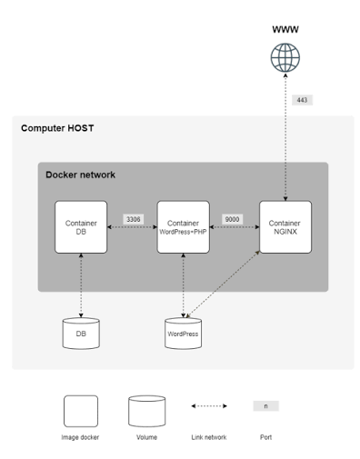

Inception
Créer une infrastructure web conteneurisée avec Docker.

Langage : Shell, Dockerfiles
Technologies : Docker, Mariadb, Nginx, Wordpress
Projet : 42
Repository : https://github.com/ma-gabriel/inception
Le projet
L'objectif était de mettre en place une infrastructure web complète à l'aide de Docker, composée de plusieurs services indépendants communiquant entre eux.
Le projet repose notamment sur NGINX, WordPress et MariaDB, avec la configuration des conteneurs, des réseaux, des volumes persistants et du chiffrement TLS.
J'ai également dû gérer la construction des images, la configuration des différents services et leur orchestration afin d'obtenir une infrastructure fonctionnelle et reproductible.
Ce que j'ai appris
Ce projet m'a permis de mieux comprendre le fonctionnement d'une infrastructure web et les interactions entre ses différents services. Il m'a également permis de me familiariser davantage avec Docker, la conteneurisation, les réseaux et la gestion de services sous Linux.
← Retour aux projets